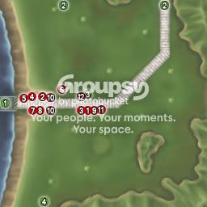
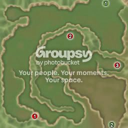

โพสต์แล้ว:
อังคาร 10 มี.ค. 2009 3:37 amโดย ECO

East Acronia Field
Monster :
Pururu /
Archen /
Crawler /
Puchi Metalica
Material : Flower / Herb / Mushroom / Bread Tree / Wood / West Fuit Tree / Wood Box 1
Attribute : No
NPC
1 Bartender
2 Item Maker
3 Adjudicater
4 Aunt of Restaurant
5 Dega
[เควสเทศกาล Valentine's Day] [เควสเทศกาล White Day]
6 Sixth Princess
7 Merchant Guild
8 Catherin
[ดำเนินเควส Crawler Carrier]
9 Miss Francis [เปลี่ยน Cocko Wing เป็น Wing Acessory]
10 East Gate Guard
11 Instructor
12 Spirit of Bullet Board
[เควส Thank Ticket]
Warp
1
East Uptown Bridge
2
Acronia Forest
3 Novice School East Acronia Field
4
Utena Lake
โพสต์แล้ว:
อังคาร 10 มี.ค. 2009 8:52 pmโดย ECO
Map เหรอ
อย่าลืมปราสาทอันเดทนะ ( ไปเอาได้ที่กระทู้ ต่างหูราชินี )
โพสต์แล้ว:
อังคาร 10 มี.ค. 2009 9:44 pmโดย ECO
มาเนียนทันมะ

โปรเจ็คดีๆมาอีกแล้ว ต้องสนับสนุน

โพสต์แล้ว:
พุธ 11 มี.ค. 2009 12:06 amโดย ECO
spiningdeff_source เขียน:ก็นั่นแหละมันก็คล้ายๆกันอ่ะคุณท่าน - -"
ปล.งานนี้มีไรให้ช่วยไหม
พร้อมก็โดนพี่เอก ใช้ ทุกงานไม่ใช่เหรอ ?
/me โดนพี่เอกตบ
โพสต์แล้ว:
พุธ 11 มี.ค. 2009 6:09 amโดย ECO
Barn
Monster :
Monk Ego /
Cococo /
Wild Bo /
Immature Cococo /
Jersey Worm /
Vega /
Heaven Rebecca /
Momo /
Recruit /
Basilicoke /
Gecko /
Fury /
Molly /
Solar Zelebu
Material : Earth Flower / Grass / Cotton Flower / Wheat / Bread Tree / Paper Tree / West Fruit Tree / Earth Crystal / Wood Box 7 / Dark Flower / Light Silk Wood / Dark Crystal
Attribute : Earth / Dark
NPC
1 Ichiko
Warp
1
Fareast City
2
Undead Castle
โพสต์แล้ว:
พุธ 11 มี.ค. 2009 10:24 amโดย ECO
 Sky Tower Island [Emil]
Material
Sky Tower Island [Emil]
Material : Peanut
Attribute : No
NPC
1 Smuggle Man (Sky Tower) [กลับ Morg City ราคา 500 G]
2 Eric
[ทำ Crorius Mantle] [ต่อสู้กับ Ruler Over Titania]
3 Great Hunter
4 Newbie Hunter
5 Ruins Hunter
6 Registance Soldier
[ไป Acropolis City]
Warp
1 Elevator [ไปโลก Titania หรือ Dominion]
2
Morg City
โพสต์แล้ว:
พุธ 11 มี.ค. 2009 9:00 pmโดย ECO

ขอเกาะต่างๆด้วยนะคะถ้าว่างๆ
ปล.แอบเนียนนิดๆ

โพสต์แล้ว:
พฤหัสฯ. 12 มี.ค. 2009 5:18 amโดย ECO
Morg Cliff
Monster :
Killer Bee /
Bau /
Yellow Pururu /
Wasp /
Bear /
Queen Bee /
Poison Lizard /
Black Bear /
Lost Metalica
Material : Grass / Rock / Heavy Rock / Mountain Rock / Iron Stone / Mineral Lump / Wood Box 2 / Treasure 5
Attribute : Earth
NPC
1
Tamahood
Warp
1
Killer Bee Hill
2
Warship Island
โพสต์แล้ว:
พฤหัสฯ. 12 มี.ค. 2009 10:17 amโดย ECO
แผนที่อันเดทในกระทู้เควส มันครบ 4 ชั้น ( 5 ชั้น ) นะงิ
ห้องในนั้นมันเยอะก็จริง แต่ชนิดมอนมันก็ไม่เยอะเท่าไหร่หรอก
โพสต์แล้ว:
พฤหัสฯ. 12 มี.ค. 2009 10:50 pmโดย ECO

Fruit Forest
Monster :
Killer Bee /
Cocko /
Queen Bee /
Pururu /
Archen /
Crimson Bau /
Roper /
Crimson Chief /
Lost Metalica
Material : Flower / Light Silk Wood / Paper Tree / North Fruit Tree / South Fruit Tree / East Fruit Tree / West Fruit Tree / Rock / Iron Stone / Wood Box 1
Attribute : No
NPC
1 Sewing Butterfly
[เปลี่ยน Needle ให้เป็น Dark Needle]
2
Tasomboon
3 Broken Electel
[ดำเนินเควส Nekomata Ai]
Warp
1
West Acronia Field
2
Steap Desert